Если вы регулярно используете Git, то вам могут быть полезны практические советы из этой статьи. Если вы в этом пока новичок, то для начала вам лучше ознакомиться с Git Cheat Sheet. Скажем так, данная статья предназначена для тех, у кого есть опыт использования Git от трёх месяцев. Осторожно: траффик, большие картинки!
Содержание:
1. Параметры для удобного просмотра лога
Пример команды: git log --oneline --graph
Скорее всего, вам уже доводилось использовать команду git log. У неё есть много полезных параметров, которые можно комбинировать друг с другом для достижения наилучшего результата. Чаще всего я использую эти:
К примеру, когда-то у меня был руководитель, который требовал еженедельные отчёты каждую пятницу. И мне было достаточно написать git log --author="Alex Kras" --after="1 week ago" --oneline, немного подредактировать полученный результат и отправить их начальству.
Вообще, в Git есть много всяких полезных параметров. Просто попробуйте выполнить man git-log чтобы посмотреть все варианты просмотра истории. Если ни один из предложенных вариантов вас не устроит, вы всегда можете воспользоваться параметром --pretty, с помощью которого можно настраивать выдачу в широких пределах.
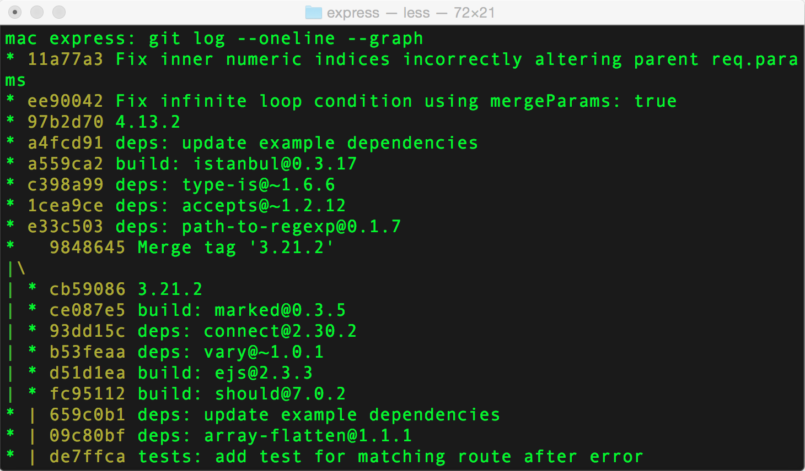
2. Вывод актуальных изменений в файл
Пример команды: git log -p filename
С помощью команд git log -p или git log -p filename можно посмотреть не только примечание к коммиту, автора и дату, но также сделанные в этом коммите изменения.
Далее можно использовать функцию поиска утилиты less, набрав «слеш» и введя поисковый запрос: /{{поисковый-запрос}} (используйте маленькую "n" для перехода к следующему результату поиска и большую "N" для того, чтобы вернуться к предыдущему):
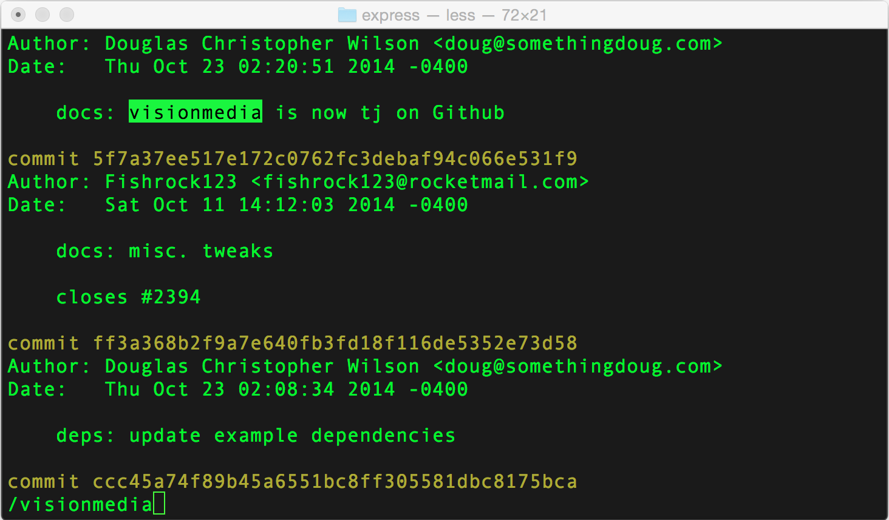
3. Просмотр изменений в определённых строках файла
Пример команды: git log -L 1,1:some-file.txt
С помощью команды git blame filename можно определить автора последних изменений для каждой строки в файле.
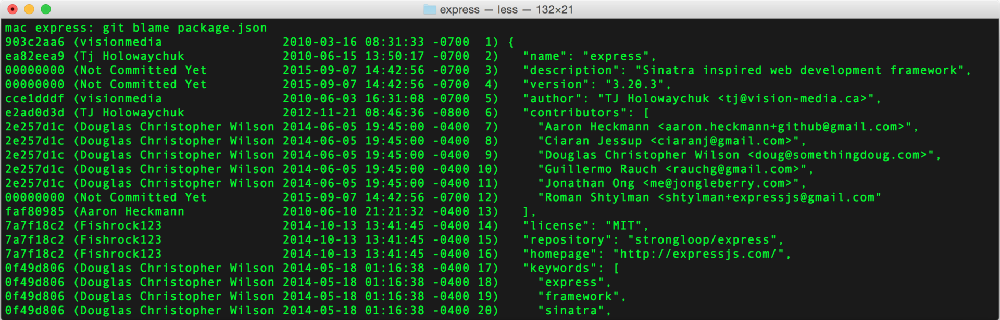
Это замечательный инструмент, однако иногда бывает недостаточно информации, которую он предоставляет.
В качестве альтернативы можно использовать команду git log с флагом -L, который позволяет указать номер интересующей строки в нужном файле, и Git отобразит только те изменения, которые связаны с этой строкой.
По сути это аналог команды git log -p, только с фокусом на конкретных изменениях.
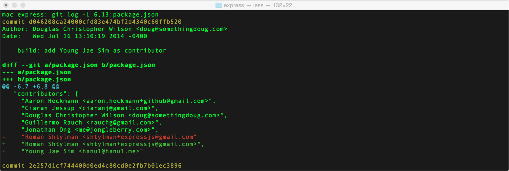
4. Просмотр ещё не влитых в родительскую ветку изменений
Пример команды: git log --no-merges master..
Если вам приходилось работать с долгоживущими ветками, над которыми трудится много людей, то вы наверняка сталкивались с множественными вливаниями (мёржами) родительской ветки (например, master) в ветку с разрабатываемой фичей. Такие мёржи затрудняют просмотр истории изменений рабочей ветки, потому что будет сложно отличить коммиты, сделанные в родительской ветке от коммитов рабочей ветки.
Команда git log --no-merges master.. решает эту проблему: параметр --no-merges говорит, что нужно показать коммиты, которые ещё не были вмёржены куда-либо, а параметр master.. говорит, что нужно показать только те изменения, которые ещё не были вмёржены в ветку master (здесь важно обратить внимание на две точки после названия ветки).
Чтобы посмотреть не только коммиты, но и изменения, которые были в них внесены, можно использовать команды git show --no-merges master.. или git log -p --no-merges master.. (их вывод будет идентичным).
5. Извлечение файла из другой ветки
Пример команды: git show some-branch:some-file.js
Иногда бывает удобно посмотреть на какой-либо файл в другой ветке, не переключаясь на неё. Это можно сделать с помощью команды git show some-branch-name:some-file-name.js, которая выведет содержимое файла в указанной ветке прямо в терминал.
А с помощью перенаправления вывода можно сохранить этот файл в указанное место на диске, например, если вы заходите открыть два файла одновременно в своём редакторе: git show some-branch-name:some-file-name.js > deleteme.js.
Примечание: если вам нужно всего лишь сравнить два файла, то можно выполнить такую команду: git diff some-branch some-filename.js
6. Пара слов о ребейзе
Пример команды: git pull --rebase
Ранее мы говорили о многочисленных мёржах мастера в рабочую ветку. Некоторых из них можно избежать, используя команду git rebase. Вообще, ребейз — очень мощная функция, и, пожалуй, будет лучше оставить её подробное описание для отдельного поста. Вот, например, что говорится в книге «Pro Git»:
Несмотря на все свои преимущества, у ребейза есть и свои недостатки, которые можно выразить одним предложением:
Не делайте ребейз коммитов, находящиеся вне вашего репозитория.
Если вы последуете этому совету, то всё будет хорошо. В противном случае все будут вас ненавидеть, а друзья и семья станут вас презирать.
Однако ребейза не нужно бояться, просто следует соблюдать осторожность при работе с ним.
Пожалуй, лучший способ сделать ребейз — использовать его интерактивный режим, запускаемый с помощью команды git rebase -i {{some commit hash}}, которая откроет редактор с инструкциями о том, что и как делать. Не буду дальше вдаваться в подробности, поскольку тема эта достаточно объёмная.
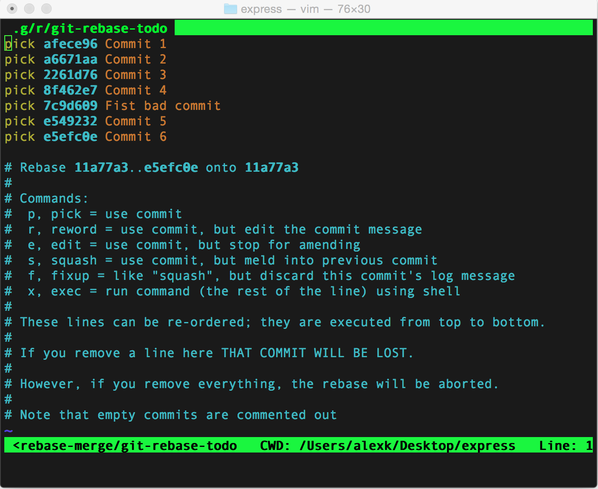
Ещё одна полезная команда ребейза: git pull --rebase
Например, вы работаете с локальной копией ветки и сделали небольшой коммит. А в это время кто-то ещё залил в удалённую копию ветки результаты своего недельного труда. Когда вы попытаетесь запушить свои изменения, Git скажет вам, что он не может это сделать, и что вам сначала нужно сделать git pull для разрешения конфликта. Как добропорядочный человек вы так и поступите и после выполнения команды git pull в истории вашей локальной копии ветки получится вот такой вот коммит, сгенерированный автоматически: «Merge remote-tracking branch 'origin/master'».
Это, конечно, не проблема и всё будет работать как нужно, однако такие коммиты засоряют историю изменений. В таких случаях лучше выполнять команду git pull --rebase, и Git сначала заберёт изменения из удалённой копии ветки, а потом накатит ваши незапушенные коммиты после самого последнего коммита удалённой ветки, так, как будто бы всё так и было. Таким образом необходимость мёржа отпадает и мы избежим уродливого коммита о мёрже в истории изменения.
7. Сохранение структуры ветки после локального мержа
Пример команды: git merge --no-ff
Мне нравится создавать новую ветку для каждого нового багфикса или фичи. Помимо прочего, это помогает чётко понимать, как серия коммитов связана с конкретным таском. Если вы когда-либо мёржили пул-реквесты на гитхабе или похожих сервисах, у вас всегда была возможность посмотреть подробную историю смёрженной ветки с помощью команды git log --oneline --graph.
Если вы когда-либо мёржили локальные ветки друг с другом, то вы могли заметить, что Git выравнивает историю коммитов, располагая их линейно один за другим. Для того, чтобы избежать этого и оставить историю изменений древовидной (такой, как после пул-реквеста), вы можете добавить параметр --no-ff, и в итоге получится подробная древовидная история: git merge --no-ff some-branch-name
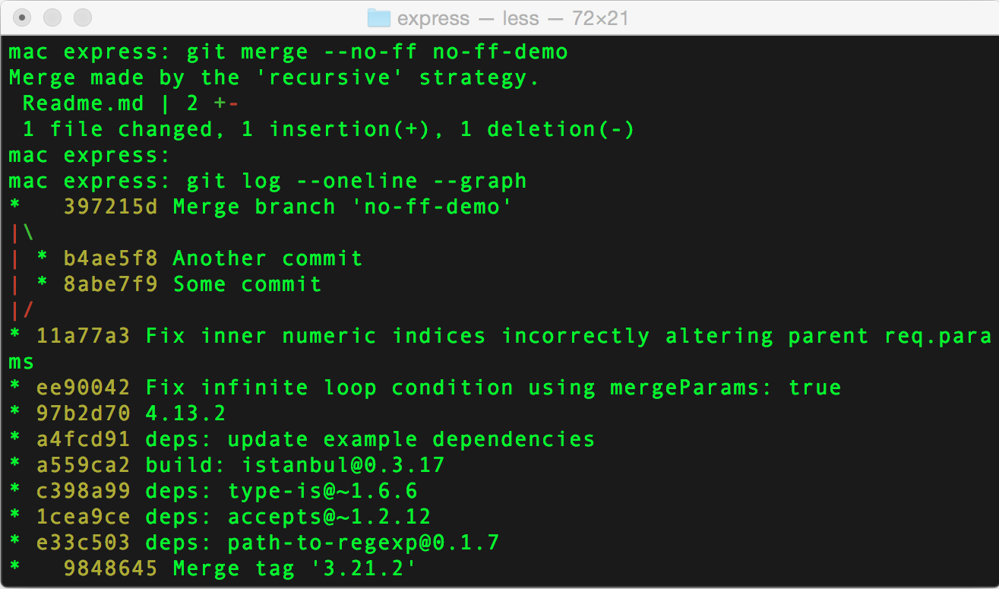
8. Исправление последнего коммита вместо создания нового
Пример команды: git commit --amend
Этот совет очень простой. Допустим, вы сделали изменения, закоммитили их, а потом обнаружили опечатку. Вы можете сделать новый коммит с описанием «исправление опечатка», но есть вариант получше.
Если вы ещё не запушили изменения в удалённую ветку, то можно сделать вот так вот:
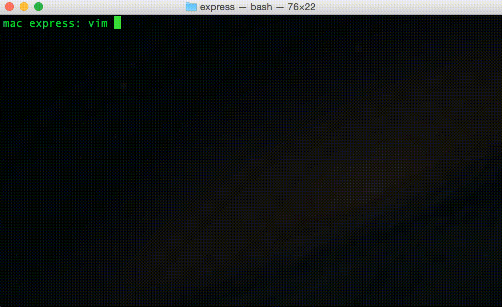
Если вы работаете над веткой один, то вы можете исправить изменения даже после того, как вы запушили ветку в удалённый репозиторий. Просто выполните git push -f после внесения изменений, и удалённая ветка будет перезаписана. Но вам НЕ ЗАХОЧЕТСЯ делать это с веткой, с которой работают другие люди (как обсуждалось в совете про ребейз выше). В таких случаях, возможно, лучший вариант — новый коммит с примечанием «исправление опечатки».
9. Три состояния в Git и переключение между ними
Пример команды: git reset --hard HEAD и git status -s
Как вы, наверное, уже знаете, файл в Git может находится в одном из трёх состояний:
(На самом деле есть ещё, как минимум, статус untracked — файл не добавлен в репозиторий — прим. перев.).
С помощью команды git status вы можете получить подробное описание файлов и их состояний. Чтобы добавить файл в индекс для коммита (перевести его из состояния unstaged в состояние staged), нужно выполнить команду git add filename.js. Команда git add . добавляет сразу все файлы (в текущей директории — прим. перев.).
Для более быстрого и простого просмотра состояния файлов можно воспользоваться командой git status -s, результат будет выглядеть примерно так:
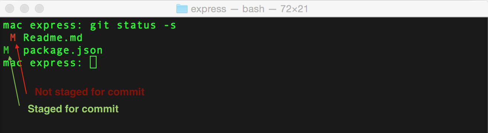
Очевидно, что команда git status не покажет вам уже закоммиченные файлы, для их просмотра следует использовать команду git log.
Есть ещё несколько команд для переключения состояния файлов.
Сброс состояния файлов
Сброс позволяет откатиться на определённую версию в истории изменений Git. Всего есть три вида сброса:
Поналачу эта информация может показаться бесполезной, однако, когда вы начнёте работать с разными версиями файлов, она вам очень пригодится. Например, я для себя выделил вот такие сценарии использования этих команд:
Выгрузка отдельных файлов
если вам нужно отменить некоторые локальные изменения для конкретных файлов, но при этом изменения для других файлов трогать не нужно, гораздо проще забрать закоммиченные изменения этих файлов с помощью команды git checkout forget-my-changes.js. Это как git reset --hard, только для конкретного файла.
Также можно забирать разные версии файла из других коммитов или веток: git checkout some-branch-name file-name.js и git checkout {{some-commit-hash}} file-name.js.
Обратите внимание, что выгруженные файлы будут находиться в состоянии «Staged for commit», и чтобы убрать их из индекса для коммита нужно будет использовать команду git reset HEAD file-name.js. Для возврата в исходное состояние просто наберите git checkout file-name.js ещё раз.
Обратите внимание, что команда git reset --hard HEAD file-name.js не сработает. В целом процедура смены состояний в Git несколько запутана и не всегда можно сходу понять, что и как нужно сделать. Я надеюсь, что в этом совете я доступно и понятно всё объяснил.
10. Мягкая отмена коммитов
Пример команды: git revert -n
Это очень удобная команда на тот случай, если вам нужно откатить последние пару коммитов, покопаться в изменениях и найти проблемное место.
Обычный git revert автоматически закоммитит те изменения, которые откатили, запросив у вас примечание к новому коммиту отката. Флаг "-n" говорит гиту, чтобы тот не переживал по поводу срочного коммита новых изменений, ведь мы хотим просто посмотреть на них.
11. Просмотр диффов для всего проекта (а не по одному файлу за раз) с помощью сторонних инструментов
Пример команды: git difftool -d
Моя любимая программа для сравнения файлов в графическом интерфейсе — Meld. Я влюбился в неё ещё со времён Linux, и с тех пор она всегда со мной.
Я, кстати, не пытаюсь пропагандировать Meld. Скорее всего, у вас уже есть любимая программа для сравнения файлов, и, вероятнее всего, она умеет работать с Git, как для сравнения, так и для разрешения конфликтов. Просто запустите следующие команды, заменив «meld» на свою любимую утилиту:
git config --global diff.tool meld
git config --global merge.tool meld
После этого всё, что вам нужно — запустить команду git difftool some-file.js для просмотра изменений в соответствующей программе вместо консоли.
Однако некоторые программы (например, тот же meld) поддерживают сравнение не только файлов, но и директорий. Если вы запустите команду git difftool -d, то увидите дифф по всему проекту, и иногда это бывает полезно.
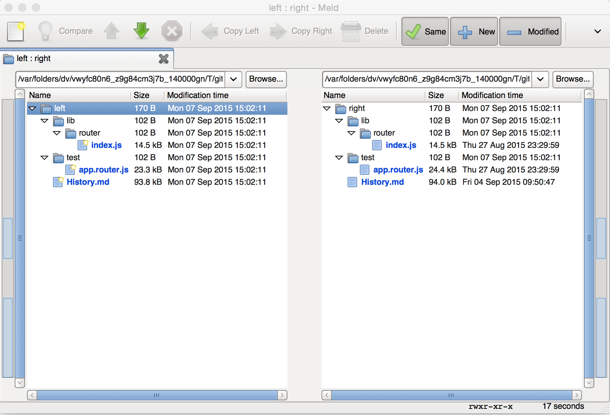
12. Игнорирование пробелов
Пример команды: git diff -w или git blame -w
Если вам когда-нибудь приходилось менять отступы или переформатировать файлы, то вы наверняка сталкивались с тем, что, по мнению команды git blame, вы теперь ответственны за все изменения в этих файлах.
К счастью, Git достаточно умён, чтобы понимать, что к чему. Вы можете запускать многие команды (такие, как git diff, git blame и т.д.) с флагом "-w" и Git будет просто игнорировать все изменения, связанные с пробельными символами (пробел, табуляция и другие).
13. Добавление определённых изменений из файла
Пример команды: git add -p
Кто-то из разработчиков Git явно неравнодушен к флагу "-p", поскольку обычно он добавляет очень удобные штуки к различным командам.
В случае с командой git add, этот флаг позволяет в интерактивном режиме выбрать, какие именно изменения из файла вы хотите закоммитить. Таким образом, вы можете более логично огранизовать последовательность своих коммитов, чтобы их проще было смотреть.
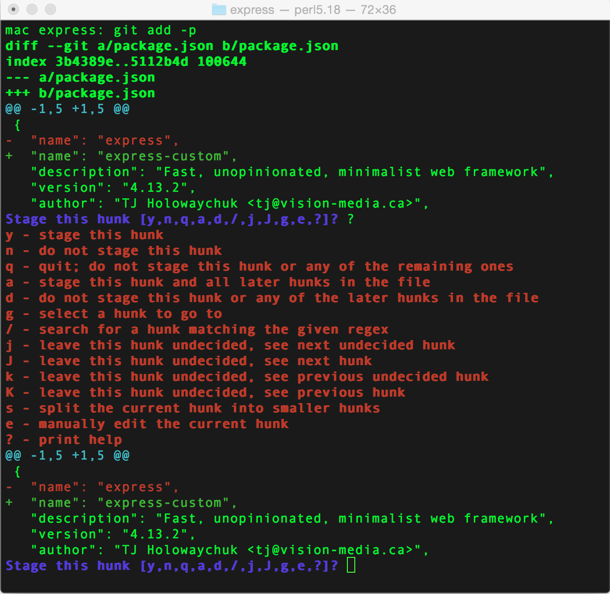
14. Поиск и удаление старых веток
Пример команды: git branch -a
Зачастую проекты обрастают большим количеством веток в удалённом репозитории, некоторые из них остаются там даже после того, как они были вмёржены в основную ветку (master). Если вы такой же фанат чистоты (по крайней мере во всём, что касается кода), как и я, вас наверняка раздражает наличие подобных веток.
Все ветки репозитория можно посмотреть с помощью команды git branch -a (ключ "-a" выведет все ветки, в том числе из удалённого репозитория), а параметр --merged покажет только те ветки, которые были вмёржены в ветку master.
Скорее всего, вы захотите сперва запустить команду git fetch -p (получить изменения из удалённого репозитория и удалить неактуальные данные), чтобы убедиться, что вы работаете с актуальными данными.
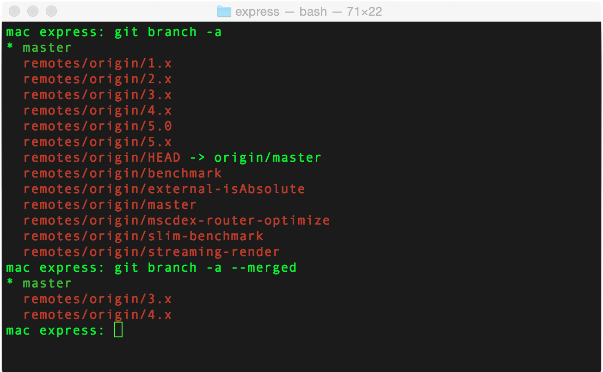
Можно изощриться и вывести списки всех удалённых веток, комментарии к последним коммитам в них и дату последних изменений:
git for-each-ref --sort=committerdate --format='%(refname:short) * %(authorname) * %(committerdate:relative)' refs/remotes/ | column -t -s '*'
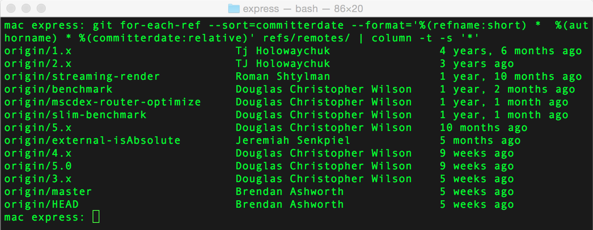
К сожалению, насколько я знаю, нет более лёгкого способа получить список смёрженных веток. Так что здесь придётся сравнивать два списка или писать для этого скрипт.
15. Откладывание изменений определённых файлов
Пример команды: git stash —keep-index или git stash -p
Если вы ещё не знаете, что делает команда git stash, то она просто кладёт все незакоммиченные изменения в специальный стек Git. Потом вы в любой момент можете выполнить git stash pop и применить все эти изменения назад. Вы так же можете посмотреть список всех сохранённых состояний в стеке с помощью команды git stash list, для более подробной информации посмотрите справку: man git-stash.
У команды git stash есть один недостаток: она откладывает сразу все файлы, а иногда бывает удобно отложить только некоторые файлы, а остальные оставить и продолжить работать с ними.
Помните магический ключ "-p"? У команды git stash он тоже есть, и, как вы уже, наверное, догадались, этот при использовании этого ключа Git предложит вам выбрать те изменения, которые нужно отложить.
Обязательно попробуйте нажать "?", чтобы посмотреть список всех возможных опций.
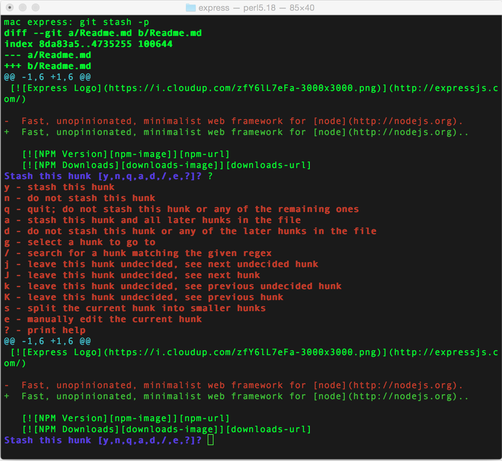
Есть ещё один способ отложить только те файлы, которые нужно:
16. Хорошие примечания к коммиту
По этой теме можно посоветовать замечательную статью «Как писать примечания к коммитам».
Здесь же я хочу особо подчеркнуть одно важное правило: хорошее примечание к коммиту должно заканчивать следующее предложение: «После применения данный коммит {{ текст вашего примечания }}». Например:
17. Автодополнения команд Git
Для некоторых операционных систем (например, Ubuntu), автодополнение для Git в шелле включено по умолчанию. Если в вашей операционной системе это не так (а в Mac OS X это не так), вы легко можете включить автодополнение.
18. Создание алиасов для часто используемых команд
TL;DR: используйте алиасы Git или bash для наиболее часто используемых команд Git.
Лучше всего работать с Git через командную строку. А лучший способ освоиться с командной строкой — каждый раз делать всё в полном объёме (набирать длинные команды). Однако рано или поздно приходит желание создать более короткие и удобные алиасы, чтобы не вводить каждый раз одни и те же команды.
Git имеет встроенную систему алиасов, например, если вы выполните следующую команду:
git config --global alias.l "log --oneline --graph"
Будет создан новый алиас для Git с названием "l", и это позволит вам набирать git l вместо git log --oneline --graph.
Примечание: к алиасам Git можно так же добавлять дополнительные параметры (например, git l --author="Alex").
Альтернатива алиасам гита — старые добрые алиасы Bash. Например, в моём конфиге .bashrc есть такая строка: alias gil="git log -online -graph", которая позволяет мне писать gil вместо полной длинной команды, и кроме того, это на целых два символа меньше, чем git l :).
19. Быстрый поиск плохого коммита
Пример команды: git bisect
Команда git bisect использует принцип «разделяй и властвуй» для поиска плохого коммита в большой истории изменений.
Представьте, что вы вернулись из продолжительного отпуска. Вы забираете последнюю версию проекта из удалённого репозитория и обнаруживаете, что та фича, над которой вы работали перед самым отпуском, теперь не работает. Вы проверяете последний сделанный вами коммит — там всё работает. Однако за время вашего отпуска в проекте появились сотни других коммитов, и вы представления не имеете, который из них оказался плохим и сломал вашу фичу.
Наверняка вы будете пытаться найти баг, поломавший вашу фичу и с помощью команды git blame на злополучном коммите найти человека, которому можно предъявить претензию. Но если баг трудно обнаружить, вы можете попробовать изучить историю изменений, в надежде отыскать плохой коммит.
Вот второй вариант — это именно тот случай, когда пригождается команда git bisect. Она позволяет вам найти плохой коммит в кратчайшие сроки.
Так что же делает git bisect?
После того, как вы укажете коммит, в котором ничего не работает («плохой» коммит) и коммит, в котором всё работает («хороший» коммит), git bisect разделит все коммиты, которые располагаются между ними пополам, переключится в новую (безымянную) ветку на этом срединном коммите и позволит вам проверить, работает ли в нём ваша фича.
Предположим, в этом «срединный» коммите всё работает. Тогда вы говорите об этом гиту с помощью команды git bisect good и у вас останется только половина всех коммитов для поиска того самого, поломавшего всё.
После выполнения этой команды Git разделит оставшиеся коммиты пополам и снова переключится в безымянную ветку на новом срединном коммите, позволив вам протестировать работоспособность вашей фичи. И так далее, пока вы не обнаружите тот самый «плохой» коммит.
Благодаря тому, что вы каждый раз делите группу коммитов пополам, для обнаружения искомого вам потребуется примерно log(n) итераций (см. Сложность алгоритма).
Список команд, которые понадобятся вам для работы с git bisect:
Данную процедуру можно автоматизировать с помощью скрипта.
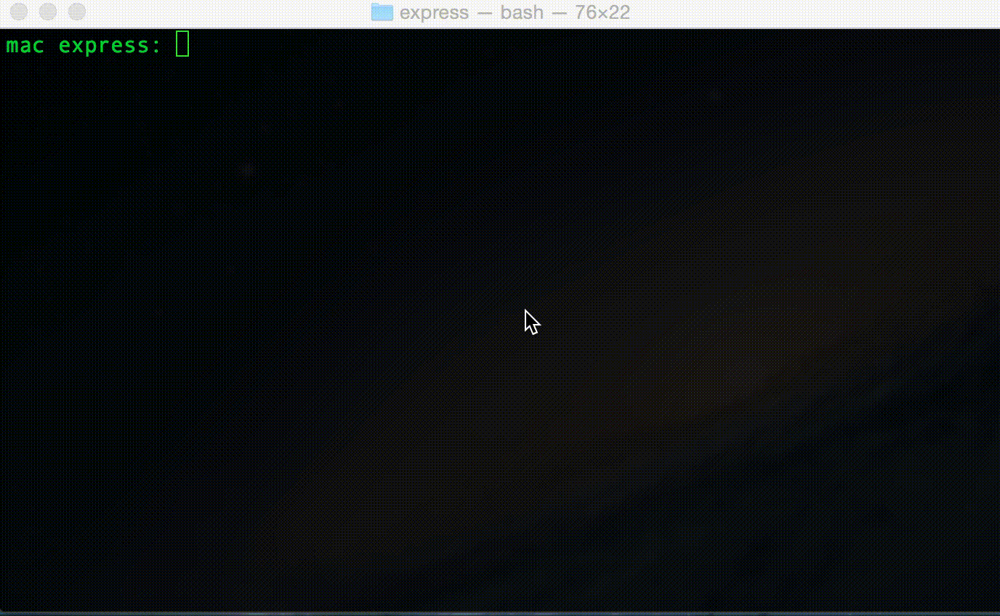
Перевёл Dreadatour, текст читал %username%.
Теги: